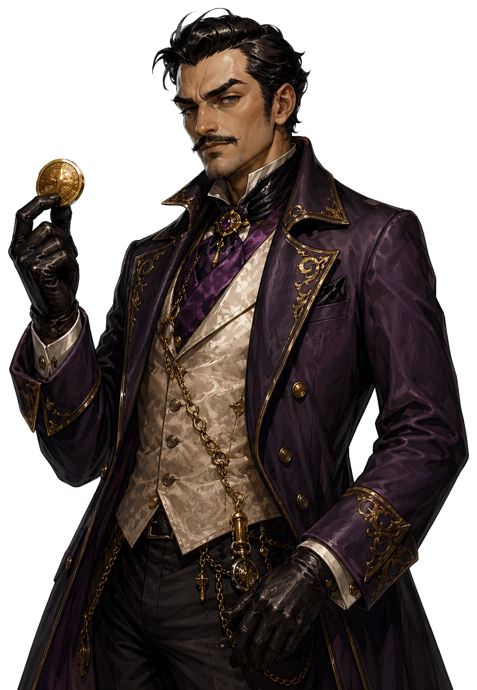

紀錄已同步
偵探考核
破解一次案件
領取
夏洛特
...
點擊繼續 ▼
偵探事務所
100
0
LONDON MYSTERIES
倫敦謎案簿
未登入時將記錄保存在這台裝置；登入 Google 後會自動同步到雲端。
目前的目標
新的案件正在等待調查。
案件進入選關，每日消耗 5 精力，怪獸追跡消耗 30 精力。
首頁
主線進行中
主線案件
夏洛特正在整理下一份案件紀錄。
倫敦日報
倫敦的迷霧中隱藏著無數祕密...
主線故事
偵探事件紀錄
事務所的檔案已經整理完成，下一份案件正在等待你確認。
故事卷宗
事務所委託桌
新的案件會先送到桌上。只有已解鎖的卷宗會被打開，其餘仍會維持封存，讓主線更像一段正在展開的故事。
每日與怪獸追跡
不限次數
今日推理挑戰
每日密碼正在重新生成中。
每週簽到
0 / 7
七日打卡日曆
完成 7 天每日推理打卡，可額外獲得 500 英鎊。
人物與盟約怪獸
人物與使魔
配置偵探、稱號與收服怪獸。已收服的怪獸可花費英鎊強化，並提供推理與追跡加成。
事務所管理
設定
音效、安裝版與系統狀態。
系統狀態
裝置與雲端
Google 登入與雲端存檔可跨裝置延續進度，安裝到主畫面後體驗會更接近手機遊戲。
存檔同步
本機存檔模式
未登入時會保存在此裝置；登入 Google 後，任何英鎊、精力與進度變動都會自動上傳。
未登入時僅保存在此裝置。
補給櫃、卷宗工具與怪獸契約強化都在這裡。先穩住精力與推理設備，再談追獵更深的倫敦異象。
請透過下方數字面板輸入推理密碼。
【偵探推理守則】
每次推理嘗試：消耗推理力
精準推理將為您恢復大量推理力。
【偵探推理守則】
每次推理嘗試：消耗推理力
精準推理將為您恢復大量推理力。
推理密碼欄